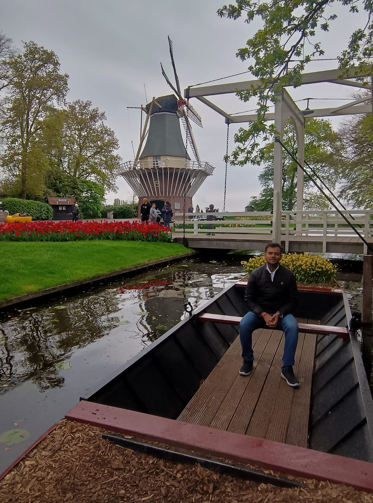

I am Dr. Sushant Shekhar (PhD), Research Establishment Officer (REO - Level 11) at the National Centre of Geodesy, IIT Kanpur. My research specializes in microwave satellite reflectometry (NavIC-IR, GNSS-R), Satellite Laser Ranging (SLR), Synthetic Aperture Radar (DInSAR), and Machine Learning algorithms for high-precision geospatial science and geodetic reference networks.

Pioneering multi-disciplinary research in satellite remote sensing, sovereign geodetic infrastructure, and data-driven physical inversion models.
Advanced signal processing for India's NavIC (IRNSS), GPS, DORIS, and Satellite Laser Ranging (SLR) infrastructure. Precision multipath phase extraction, local geoid modeling, and reference frame determination.
Multi-sensor Earth observation using Sentinel-1A, EOS-04 (RISAT-1A), UAVSAR, and CYGNSS. Long-term Himalayan crustal deformation, earthquake rupture slip analysis, and urban land subsidence monitoring.
Deep neural networks, ensemble regressors, and wavelet decomposition applied to multi-source satellite datasets. Soil moisture estimation, disaster hazard zonation, and hydrological modeling.
Mathematical modeling of electromagnetic wave interaction with vegetation and bare soil. Statistical and heuristic power estimation models for FPGA wireless pipelines and IoT sensor telemetry.
Developed a specialized MATLAB software framework for high-precision preprocessing and spectral analysis of raw Navigation with Indian Constellation (NavIC) signals. The software extracts SNR interference patterns and computes multipath phase observables for field-scale soil moisture estimation and geodetic sensing, and has been directly adopted and utilized inside SAC ISRO.
% ISRO SAC NavIC-IR Preprocessing Engine
% Dr. Sushant Shekhar et al.
function [sm_est, phase_corr] = processNavICSignal(snr_raw, elev_angle)
% 1. Detrend direct signal component via low-order polyfit
snr_detrended = detrend_snr(snr_raw, elev_angle, 2);
% 2. Continuous Wavelet Transform (CWT) for peak multipath freq
[cwt_coefs, freq] = cwt(snr_detrended, 'morse', fs);
peak_freq = extract_dominant_multipath_frequency(cwt_coefs);
% 3. Compute dielectric permittivity & vegetation phase shift
phase_corr = vegetation_phase_inversion(peak_freq, elev_angle);
sm_est = dielectric_to_volumetric_sm(phase_corr);
endExplore 45+ research papers across SCI-indexed journals and international IEEE/Scopus conferences. Filter by domain or search across citations.
From prestigious national research fellowships to leading space geodetic engineering at IIT Kanpur.
Leading research programs and technical execution in sovereign space geodesy, national geodetic network benchmarks, satellite laser ranging (SLR) infrastructure, multi-constellation GNSS analysis, and microwave remote sensing applications across India.
Conducted advanced hands-on training modules for engineers and researchers in Python scientific computing, Natural Language Processing, Machine Learning models, and business intelligence reporting with Power BI.
Implemented production data pipelines, predictive models, and customer analytics clustering.
Principal investigator researcher on ISRO-sponsored project for NavIC reflectometry signal modeling. Developed dielectric inversion algorithms, conducted extensive agricultural ground-truth campaigns, and created the MATLAB software package deployed in SAC ISRO.
Modeled multi-frequency NavIC SNR interferograms and designed field-scale experiments to prove feasibility of indigenous GNSS soil moisture estimation.
Taught undergraduate and postgraduate engineering courses in Electronics, Signal Processing, and Embedded Systems. Guided senior capstone projects in IoT and telemetry.
Assisted in laboratory coursework and taught VLSI design, semiconductor devices, and digital microelectronics.
Distinguished accolades for research innovations in space science and geospatial engineering.
Graduate Aptitude Test in Engineering, India
Achieved top 0.3% national ranking demonstrating exceptional technical rigor in Electronics & Communication fundamentals.
16th Uttarakhand State Science & Technology Congress (2022) at UCOST Dehradun
Conferred for groundbreaking software engineering in NavIC microwave reflectometry and space-based agricultural remote sensing.
National Seminar by IIRS (Indian Institute of Remote Sensing) & ISRO (2021)
Awarded for the most outstanding technical paper on satellite remote sensing and soil moisture inversion.
14th Uttarakhand State Science and Technology Congress (2020) at UCOST Dehradun
Honored for pioneering research contributions in satellite positioning and microwave multipath modeling.
3rd World Conference on Innovations in Management Science and Engineering
Recognized for novel environmental monitoring frameworks utilizing spaceborne Earth observation datasets.
Space Applications Centre (SAC), ISRO
Official deployment and utilization of MATLAB NavIC signal preprocessing software inside national space facilities.
Rigorous academic background and continuous advanced certifications in Artificial Intelligence and Space Science.
Graphic Era Deemed to be University
Specialized in Space Geodesy, Satellite Remote Sensing, and NavIC Signal Processing in collaboration with ISRO projects.
Jaypee Institute of Information Technology (JIIT), Noida 62
Advanced VLSI design, semiconductor devices, embedded systems, and statistical signal processing.
Bharati Vidyapeeth College of Engineering, Pune
Core electronics engineering, wireless communications, and digital signal processors.
Holy Mission, Samastipur (12th) & Kendriya Vidyalaya, Barauni (10th)
Affiliated to Central Board of Secondary Education (C.B.S.E).
IIT Roorkee (6 Months Post Graduate Certification)
Deep neural network architectures, computer vision, sequence models, and reinforcement learning.
Dataisgood in association with IBM & Microsoft
End-to-end data science pipelines, advanced machine learning, predictive analytics, and Python/SQL.
Indian Institute of Remote Sensing (IIRS), ISRO Dehradun
Geospatial data integration, spatial analysis, and satellite data governance for government and university faculty.
Indian Institute of Remote Sensing (IIRS), ISRO Dehradun (3-Month Course)
Comprehensive orbital mechanics, GPS/GLONASS/NavIC constellations, and spatial GIS database modeling.
Indian Institute of Remote Sensing (IIRS), ISRO Dehradun
Planetary surface morphology, Chandrayaan & Mars Orbiter Mission remote sensing data interpretation.
Open for academic partnerships, research discussions, industry consultancy, and keynote seminars in Space Geodesy & AI.
Research Establishment Officer (REO - Level 11)
National Centre of Geodesy (NCG), IIT Kanpur
National Centre of Geodesy, IIT Kanpur, UP, India
Permanent: New Professors Colony, Begusarai, Bihar-851117
REO @ NCG, IIT Kanpur • Gemini Flash